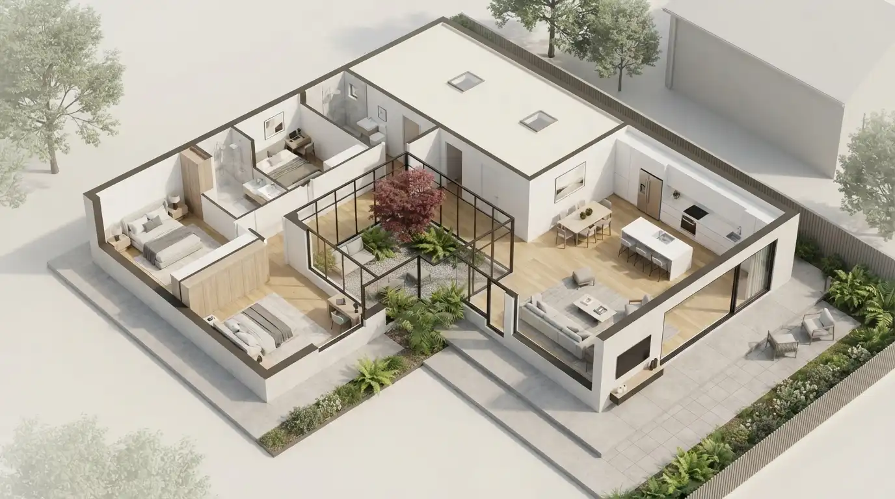

Denah rumah minimalis 1 lantai yang populer umumnya mengutamakan tata ruang linear atau L-shape agar sirkulasi udara dan cahaya tetap optimal meski lahan terbatas. Merancang denah yang tepat adalah kunci utama untuk mendapatkan hunian yang terasa luas, sehat, dan fungsional tanpa membuang-buang area yang ada.
Poin Penting
- Denah L-shape atau T-shape sangat efektif untuk menghindari dead space atau ruang mati.
- Konsep open space (tanpa sekat masif) membuat area publik di dalam rumah terasa dua kali lebih lega.
- Ventilasi silang (cross-ventilation) adalah syarat mutlak untuk sirkulasi udara yang sehat.
- Penempatan inner courtyard atau taman dalam membantu pencahayaan alami masuk ke bagian tengah rumah.
Prinsip Denah Rumah Minimalis Modern
Dalam mendesain denah rumah di lahan terbatas, prioritas utama adalah menghilangkan ruang-ruang mati (dead space) seperti lorong yang terlalu panjang atau sekat yang tidak fungsional. Denah berbentuk L-shape atau T-shape sering digunakan untuk memaksimalkan satu area khusus (seperti halaman belakang atau samping) sebagai sumber orientasi bukaan dan sirkulasi utama bangunan.
Mengoptimalkan Ruang dengan Konsep Open Space
Kunci rumah mungil agar tak terasa sumpek adalah meminimalisir dinding pembatas. Menggabungkan ruang keluarga, ruang makan, dan dapur bersih (pantry) tanpa partisi masif akan membuat rumah 1 lantai terasa jauh lebih luas. Jika partisi tetap dibutuhkan secara fungsional, gunakanlah partisi semi-transparan seperti kisi-kisi kayu, rak buku tembus pandang, atau pintu lipat kaca agar batas visual antar ruangan tetap terasa terbuka.

Ilustrasi denah rumah minimalis modern yang menerapkan konsep open space dan sirkulasi cahaya yang optimal.
Pentingnya Sirkulasi Udara dan Cahaya Alami
Denah rumah yang sehat tidak boleh melupakan cross-ventilation (ventilasi silang). Pastikan ada bukaan atau jendela yang saling berhadapan di dua sisi rumah agar udara kotor bisa terusir dan udara segar dapat masuk. Selain itu, penempatan inner courtyard (taman dalam rumah) berukuran kecil (misalnya 2x2 meter) di area ruang makan atau area keluarga sangat direkomendasikan untuk menyuplai cahaya alami ke area tengah rumah yang biasanya minim sorotan matahari luar.